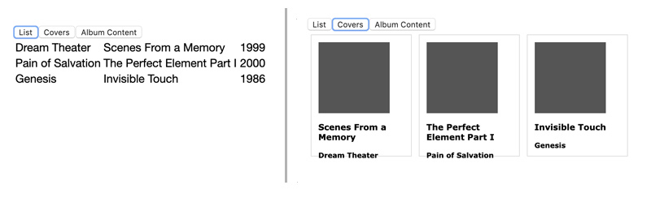
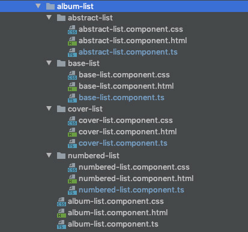
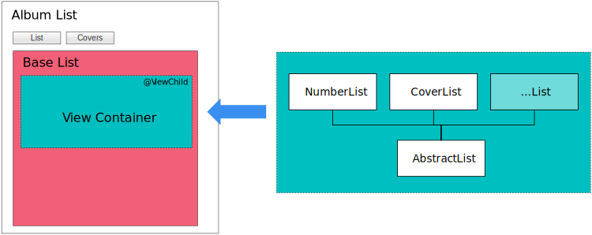

Using Angular @ViewChild to implement multiple visualizations of data sets
Sometimes, a single representation of data is just not sufficient.
If we take a music library app as an example, one would want to look at the music collection either in list form, or as a pretty list of the albums’ cover images while keeping the rest of the UI unchanged. Both are using the same underlying data set, and ideally, the change in presentation happens without reloading the data from the server every time.
In Angular, the @ViewChild can be used to implement that scenario, and in this
post, we’re going to develop an example where the user can switch between multiple
different representations of the data, like this:

Overall Angular architecture
To keep things tidy, we’re going to organize the components and views for the
different list representations in directories under a folder album-list for the
AlbumListComponent. Here is an image of the final folder structure, showing all the
files we’re going to create and use in this example:

The code structure is set up so that the AlbumListComponent is going to be responsible
for loading the data and providing an entry point for the page as well as the UI, with
the exception of the actual lists not being rendered here.
The logic for the switching of the views is going to be accomplished by the
BaseListComponent, which will do the heavy lifting of rendering and switching
between user-selected views and passing any data to them.
The use of two separate components neatly separates the presentation of the page
in the AlbumListComponent from the business logic of managing the rendering of
the different, selected views, located in the BaseListComponent. Down the line,
we’re going to create the actual implementations for the rendering of the list in
specialized list render components, such as the NumberedListComponent and
CoverListComponent shown in the diagram below.

Let’s start with the outermost album-list.component.html template.
Step 1: Data retrieval and UI setup
Following is the HTML we’re using on the album list page to allow a user to switch between different representations of the list of albums.
<div class="albumlist-container">
<div class="format-selector">
<button type="button" (click)="onChangeAlbumDisplayClick('list')">List</button>
<button type="button" (click)="onChangeAlbumDisplayClick('covers')">Covers</button>
</div>
</div>Here, we are using the component’s onChangeAlbumDisplayClick() function that
will change the object property determining which list view will be rendered. The
corresponding Typescript code of the component
looks like this (excluding the @Component decorator):
export class AlbumListComponent {
public currentStyle = 'covers';
public albumList: Album[] = [];
public onChangeAlbumDisplayClick($event) {
this.currentStyle = $event;
}
}As we can see, the component has two properties, currentStyle and albumList,
which are used to store the list of albums and the style in which to display them.
Both will be passed to a child BaseListComponent we’re going to develop shortly.
The basic UI is now ready, so we can embed the BaseListComponent into the
template and pass the two data properties, so the logic can react to any changes.
With this addition, the album-list.component.html looks like this:
<div class="albumlist-container">
<div class="format-selector">
<button type="button" (click)="onChangeAlbumDisplayClick('list')">List</button>
<button type="button" (click)="onChangeAlbumDisplayClick('covers')">Covers</button>
</div>
<div>
<base-list [showContentStyle]="currentStyle" [albumList]="albumList"></base-list>
</div>
</div>We see that in the template, we’re including a tag <base-list/>, for the
BaseListComponent. That component will be
orchestrating the rendering of the actual display components for the lists and
contain the code to swap the view components for the data dynamically.
Here’s the code for the AlbumListComponent class (again without @Component
decorator)
export class AlbumListComponent implements OnInit {
// The two properties, which are passed to BaseListComponent via property binding
public currentStyle = 'covers';
public albumList: Album[] = [];
constructor(private albumService: AlbumService) { }
// Loading the album data from the server
ngOnInit() {
this.albumService.getAllAlbums()
.subscribe(
(albumList: Album[]) => this.albumList = albumList;
);
}
public onChangeAlbumDisplayClick($event) {
this.currentStyle = $event;
}
}All that has been added is the call to the server via the AlbumService and the
storing of the retrieved data in the albumList property. For the purposes of
this example, I’m going to skip the handling of errors in the API call.
Step 2: List Component and view switching
All the work we’ve done so far was to create a UI which allows the user to load
and choose how to display the data. Before we get to the creation of the components
rendering the data in different ways, we will look at the BaseListComponent which
will make the dynamic rendering of the selected view component happen.
To start out, let’s create the component and hook it up with the inputs it will
receive from the AlbumListComponent:
@Component({
selector: 'base-list',
templateUrl: './base-list.component.html',
})
export class BaseListComponent implements OnInit {
@Input() showContentStyle: string;
@Input() albumList: Album[] = [];
private contentStyles = {
list: NumberedListComponent,
covers: CoverListComponent,
};
ngOnInit() {
this.showContentStyle = 'covers';
this.instantiateViewComponent(this.showContentStyle);
}
private instantiateViewComponent(componentName: string) {}
}We see the two @Input() lines at the beginning to allow the component to accept
the property bindings of the AlbumListComponent. After the @Input() we define
contentStyles, a mapping from the string identifying the component (“list” or
“covers”) to the corresponding component class being rendered later.
This setup is followed by the ngOnInit() function, which sets the default view and
calls a method, which will render and insert the selected component
into the template of the BaseListComponent. The template for this component is really
short and simple and consists only of a <div /> element with an identifier we’re going
to use later to insert the rendered component (#albumListStyle) at that location
of the template:
<div>
<div #albumListStyle></div>
</div>With this basic setup, we’re ready to tackle the heart of the implementation, the
instantiateViewComponent() method receiving the string identifying the component
to instantiate. This method needs to accomplish the following tasks:
- Identify the correct component class corresponding to a given string identifier.
- Create an instance of that component.
- Pass any data needed for rendering into the newly instantiated component.
- Place the rendered component into the parent template.
The following code accomplishes these tasks:
@ViewChild('albumListStyle', {read: ViewContainerRef, static: true})
albumListContainer: ViewContainerRef;
constructor(
private componentFactoryResolver: ComponentFactoryResolver,
) { }
private componentReference: ComponentRef<{}>;
private instantiateViewComponent(componentName: string) {
const componentType = this.provideListComponent(componentName);
const factoryInstance = this.componentFactoryResolver.resolveComponentFactory(componentType);
this.componentReference = this.albumListContainer.createComponent(factoryInstance);
const instance = this.componentReference.instance as AbstractList;
instance.albumListToRender = this.albumList;
}
private provideListComponent(componentStyle: string) {
return this.contentStyles[componentStyle] || this.contentStyles.list;
}
}In the first two lines, the @ViewChild decorator creates a reference to the HTML
element in this component’s template with the #albumListStyle annotation and stores
the reference in the albumListContainer property.
In line 11, the provideListComponent() method is used to identify and return a
reference to the component class associated with the provided string identifier
componentName — or to otherwise return a default. Lines 12 and 13 retrieve
the selected component’s factory and instantiate the component from it. Notice also
in line 9, how we’re referring to the ViewChild via the albumListContainer property
to create and inject the component. A reference to the newly instantiated component
is kept in the componentReference object property, so that we can do two things:
- Pass data into the component for rendering
- Destroy the component later, when the user selects another view of the data for display. If we don’t destroy the component instance, we would add a new object instance on each “switch” of the view.
To pass any data into the child component, we get a reference to the class instance
and provide the loaded data to the rendering component, which is shown in lines 11
and 12. We have not yet seen the components doing the actual rendering, but we
can take an educated guess from this code that they possess an albumListToRender
property. Before we go into the components doing the actual rendering, let’s look
again at our overview graphic and see what we’ve accomplished so far:
- We have set up a component which forms the base for our implementation, the
AlbumListComponent. Its main task is to set up the page, load the data from the server and provide the UI to change the data view and the styling for the entire page. - As its child, we implemented the
BaseListComponent, which handles the switching of the selected view of the information by instantiating child components and passing the data to the child components.
Step 3: Implementing the list views
We saw in the previous section that we’re passing data to the components taking care
of the rendering of the list. In line 15 of the last listing, you may have noticed a
reference to an AbstractList. That (abstract) class is the basis for all
components tasked with rendering lists. It provides a common data reference and
looks as follows:
export abstract class AbstractList {
public albumListToRender: Album[];
}For a real implementation of a list we look at the component rendering the albums in form of a grid of cards with the album covers, artist and album name. The Typescript class is very straight forward:
@Component({
selector: 'app-cover-list',
templateUrl: './cover-list.component.html',
styleUrls: ['./cover-list.component.css']
})
export class CoverListComponent extends AbstractList {
constructor() {
super();
}
}It extends and instantiates the AbstractList class in its constructor method,
thereby gaining access to the albumListToRender property. The corresponding
template is straight forward Angular templating:
<div>
<div *ngFor="let album of albumListToRender" class="albumcard-container">
<div class="albumcard-cover"><!-- image tag here--></div>
<div class="albumcard-data">
<h3>{{ album.albumName }}</h3>
<h4>{{ album.artist }}</h4>
</div>
</div>
</div>Each of the components rendering a view have a very similar setup:
- The actual component code consists of only a constructor which calls the
super()method to gain access to theAbstractListvariablealbumListToRender - The view template uses that
albumToRenderproperty to display the same data in a different format.
With this knowledge, setting up new views merely involves creating a new component and
implementing the HTML to render the album data in the required output format. That, and
adding the new component to the contentStyles property in the BaseListComponent.
Step 4: Cleaning up and dealing with view changes
The implementation so far almost works. There is still a problem with the
rendering of the components displaying the list and a problem that an existing
component is not removed when the view should be changed. To solve these two problems,
we’re going to use the ngOnChange and ngOnDestroy methods in the BaseListComponent:
export class BaseListComponent implements OnInit, OnDestroy, OnChanges {
...
ngOnDestroy() {
this.destroyChildComponent();
}
ngOnChanges() {
this.destroyChildComponent();
this.instantiateViewComponent(this.showContentStyle);
}
private destroyChildComponent() {
if (this.componentReference) {
this.componentReference.destroy();
this.componentReference = null;
}
}
}The ngOnDestroy() method unloads (destroys) the dynamically rendered component to
avoid memory leaks through this implementation. The ngOnChanges() method will get
called at each change of the showContentStyle property, indicating that the user
requested a different view. This method is responsible for destroying the already
existing view component and render the new view.
Summary
In this article, we explored how to change the visual presentation of data sets in Angular
without reloading the data for each change in display style. This implementation
is made possible through Angular’s @ViewChild feature, which allows the TypeScript host
component instance to replace the rendered template dynamically and pass its data to the
child component.
The principle behind this functionality can be used in many other ways, such as rendering an entity that has common attributes but different details depending on the type of the data. As an example, a page showing the details of library items would need to display common data such as title, author/artist and dewey index but would have different detail information depending on whether the item is a book, magazine, music recording or DVD (e.g. number of pages, edition for books vs. playing time and track list for CDs). In this case, it would not be the user clicking a button to change the display, but the system itself would select and instantiate the correct child template based on a parameter value in the data object to be rendered.